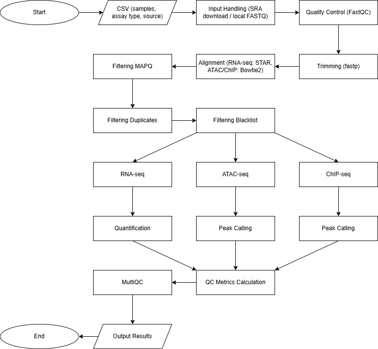

PROJECT
Multi-Assay NGS Pipeline
A modular Nextflow DSL2 pipeline for RNA-seq, ATAC-seq, and ChIP-seq analysis, supporting reproducible workflows across local and HPC environments.
Why I Built
Preprocessing is a required step for all sequencing data and often follows a repetitive and error-prone workflow when performed manually. This makes it difficult to ensure consistency and scalability across multiple datasets. To address this, I developed a reproducible and automated pipeline that standardizes preprocessing steps, reduces human error, and significantly improves efficiency for large-scale sequencing analysis.
What I Built
- Designed modular Nextflow DSL2 workflows supporting RNA-seq, ATAC-seq, and ChIP-seq analysis across multiple samples.
- Automated end-to-end preprocessing, including FASTQ quality control, trimming, alignment, and quantification.
- Supported multi-sample processing through a metadata-driven CSV input system for both SRA and local data.
- Integrated widely used tools including FastQC, fastp, STAR, Bowtie2, and MultiQC.
- Built in reference genome and blacklist handling with support for custom user inputs.
- Provided flexible parameter configuration for assay-specific preprocessing and filtering.
- Enabled scalable execution on both local and HPC environments.
- Ensured reproducibility through containerized execution using Docker.
- Organized outputs into structured directories for downstream analysis and reporting.
Basic Workflow Diagram

Output Examples
Below are examples of the pipeline outputs generated from real sequencing datasets. The results shown were produced using SRR453566 (RNA-seq) and SRR27410792 (ATAC-seq).
Example Output Structure
results
├── atac
│ ├── ATAC-Test-Run
│ │ └── SRR27410792
│ │ ├── alignment
│ │ │ ├── SRR27410792.bowtie2.log
│ │ │ ├── SRR27410792_final_sorted.bam
│ │ │ ├── SRR27410792_final_sorted.bam.bai
│ │ │ ├── SRR27410792_sorted_dedup.txt
│ │ │ ├── filtered.bam
│ │ │ ├── sorted.bam
│ │ │ └── sorted_dedup.bam
│ │ ├── homer
│ │ │ └── tagdir
│ │ │ ├── I.tags.tsv


FeatureCount Example
# Program:featureCounts v2.1.1; Command:"featureCounts" "-T" "1" "-p" "-B" "-s" "0" "-t" "exon" "-g" "gene_id" "-a" "unzipped.gtf" "-o" "SRR453566_featurecounts.txt" "SRR453566_final_sorted.bam"
Geneid Chr Start End Strand Length SRR453566_final_sorted.bam
YDL246C IV 8683 9756 - 1074 4
YDL243C IV 17577 18566 - 990 207
YDR387C IV 1248154 1249821 - 1668 481
YDL094C IV 289572 290081 - 510 23
YDR438W IV 1338274 1339386 + 1113 210
YDR523C IV 1485566 1487038 - 1473 38
YDR542W IV 1523249 1523611 + 363 0
NarrowPeak Example
I 73 568 SRR27410792_peak_1 149 . 6.98961 18.7434 14.9632 222
I 20731 21064 SRR27410792_peak_2 59 . 4.28395 8.31299 5.97829 205
I 38886 39051 SRR27410792_peak_3 30 . 3.12812 4.76334 3.05207 45
I 45336 45716 SRR27410792_peak_4 59 . 4.28395 8.31299 5.97829 150
I 58202 58610 SRR27410792_peak_5 21 . 2.65869 3.67721 2.13091 280
I 60770 61238 SRR27410792_peak_6a 34 . 3.18083 5.27043 3.46667 75
I 60770 61238 SRR27410792_peak_6b 34 . 3.15302 5.21219 3.41481 374
I 62640 62879 SRR27410792_peak_7 55 . 3.90148 7.77312 5.54097 59
I 68209 68715 SRR27410792_peak_8 52 . 3.20152 7.40092 5.24896 191
TOOLS USED
Workflow & Infrastructure
Preprocessing & QC
Alignment
Post-processing
Analysis
Code and How to Use
Download Use Command Line: git clone https://github.com/fchen-code/Bulk-Sequencing-Pipeline.git
Move to Directory: cd Bulk-Sequencing-Pipeline
Open README: cat README.md